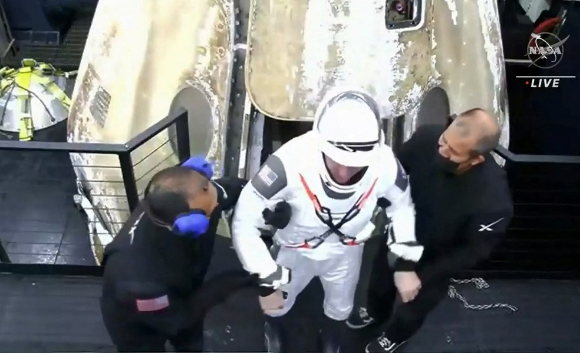

Astronautas voltam à Terra após quase 6 meses no espaço
02/05/2021
lcmartins.oliveira@gmail.com
Três americanos e um japonês retornaram de uma missão científica na ISS. Viagem foi feita pela cápsula Dragon, da SpaceX, a primeira com novo meio de transporte que tira dependência dos EUA da Rússia.
Veja mais...